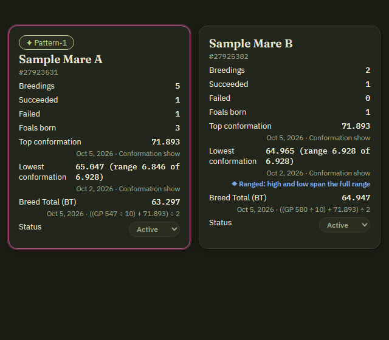
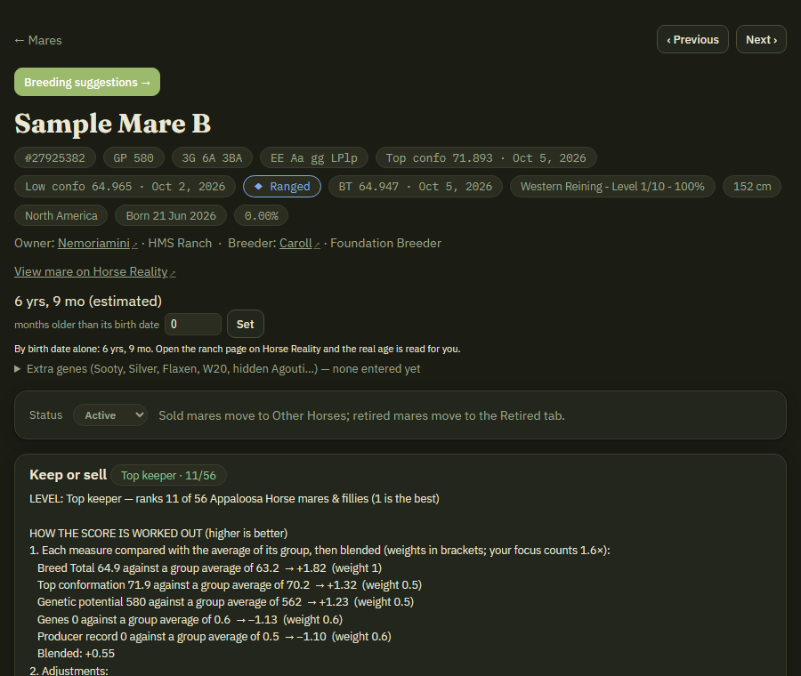
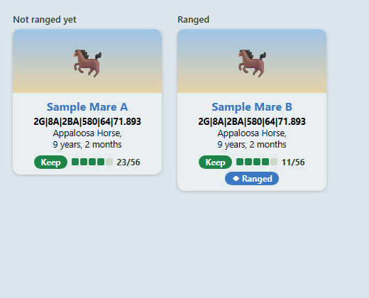
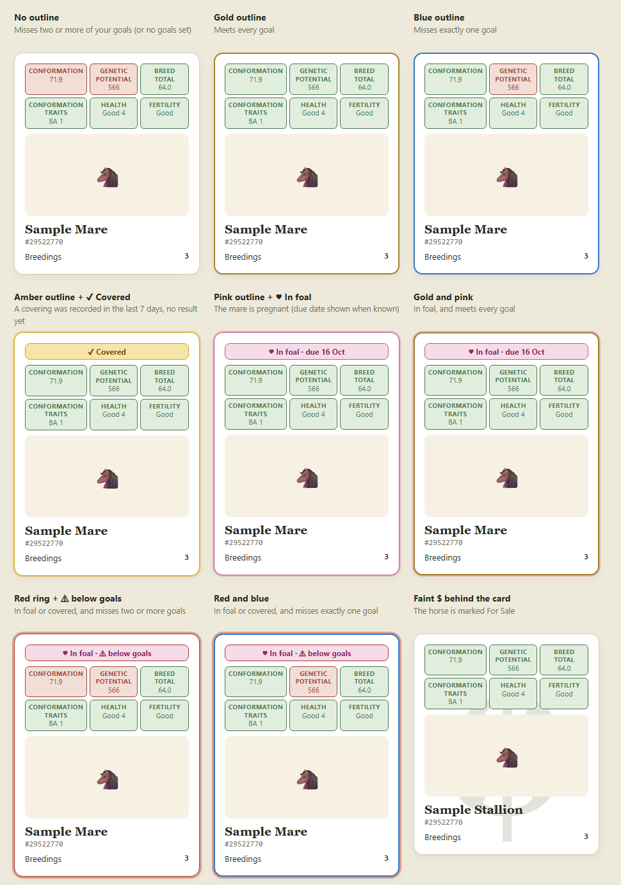

A private ledger that fills itself in while you browse Horse Reality. Everything is saved in your own browser and nothing is sent anywhere.
| Open this page | The ledger saves |
|---|---|
| A horse's page | Name, breed, age, genetic potential, conformation, health, fertility, pedigree, colour genes, pregnancy and covered status, picture. |
| A horse's stats page | Best conformation score (from the latest show results). |
| A conformation show's Results page | The scores, ranks and premiums of your horses in that show; raises each horse's top score. |
| The Breed page, then click Breed | The covering: mare, stallion, date, fee and transport. Failed attempts are tracked too. |
| A stallion's page | His public and private stud fees and semen vial price; his Offspring tab gives foals. |
| A mare's Foals tab | Every foal listed there, with its sire. |
| Your bank page | Stud fees earned, studs you paid, horses you bought and sold (price, date, buyer). |
| Market → My Studs | The public and private fees on your own stallions. |
On Horse Reality's Breed page the ledger also adds Open mare ↗ (it follows the mare picked in the drop-down) and Open stallion ↗ beside the mare selector, which open each parent's own page in a new tab.
On every horse's page there is a white Open in Ledger pill in the top-left of the picture. Click it to jump straight to that horse in the ledger. If the dashboard is already open it is brought to the front.
| Tab | What it holds |
|---|---|
| Stallions | Your stud roster: fees, breedings, earnings. The tiles at the top count your Active stallions, mares, colts and fillies, each with how many fit your goals, are off by one, or off by more. |
| Mares | Your mares (age 3 and over) with their breeding status. |
| Colts | Your stallions under 3. Click a heading to sort. |
| Fillies | Your mares under 3. Click a heading to sort. |
| My Herd | Every horse you own, with role, status and project. |
| Retired | Retired and deceased horses, kept out of your working lists. |
| Other Horses | Horses you chose to follow that belong to other players, and the Removed horses list. |
| Analytics | Numbers, advice and pairing ideas. |
| Foal Calculator | Check inbreeding and colour odds for any pair. |
The search box above the tabs finds any horse the ledger has seen, by name or life number.
| Status | Meaning |
|---|---|
| Pending | A covering was logged; the result isn't known yet. |
| Succeeded | The mare is confirmed in foal. |
| Failed | Confirmed not in foal. |
| Foal Born | The foal has arrived. |
When you open a horse that isn't yours, a small box asks whether to add it to your ledger. Add to ledger puts it on Other Horses (it never affects your own totals). No thanks stops it asking about that horse again. Stallions you follow show their stud fees right on their row.
In Highlight goals, tick Separate goals for mares & fillies and for stallions & colts if the two should have different goals. Two buttons then appear, Mares & fillies and Stallions & colts; click one to edit that set (a line under them says which). Every horse's goal boxes, the goal counts, the outlines, Analytics and the goal suggestions then use the goals for its own sex. Un-tick the box to go back to one set for everyone; the two sets are kept. Saved goal sets keep the whole arrangement.
When you open a horse's page on Horse Reality, a small card in the bottom-left corner says whether the horse fits your criteria and why. Its colour is the verdict: green fits, blue off by one, red misses two or more. Click it for the reasons: each goal box with the horse's value and your minimum, the preferred or unwanted genes it carries, what your notes on it say, and whether its foals beat their dams. The × hides it for that page; a checkbox at the bottom of the My notes panel turns it off everywhere.
A horse that is not yours is checked as a purchase. The card starts "Buying check", uses your purchase criteria for its breed (or your goals if you have none), and adds whether the horse would help your herd: its genetic potential, top conformation and Breed Total against your own horses of the same breed, and whether it is strong in the traits your herd is weakest in.
The Purchase criteria panel (on the Settings tab) sets what a horse should have for you to buy it. Applies to picks mares & fillies, colts & stallions, or both, and Set for picks All breeds or one breed, so you can ask for example for GP 600 and conformation 70 in mares and fillies and 650 and 75 in colts and stallions. An empty field uses the next wider setting: that breed for both sexes, then all breeds for that sex, then all breeds for both. The fields are your goal fields (minimum genetic potential, top conformation and Breed Total, lowest conformation trait rating allowed, worst health rating, minimum fertility) plus the highest price you will pay and traits it must be Good or better in. Preferred and unwanted genes count too.
Suggestions from your herd: once three of your horses of the breed are saved, the panel suggests values with an Apply button: the level that puts a new horse in the top 40% of your herd, and the traits at least half your horses are Below average or Average in.
On your ranch (estate) page on Horse Reality, each horse card of yours that is saved in the ledger gets a badge at the bottom of the card showing where the horse sits between keeping and selling, compared with the rest of your herd: a level tag with five pips — Top keeper (dark green, 5 pips), Keep, Middle of the herd, Consider selling (amber) or Sell (red, 1 pip) — and the horse's rank in its group (for example 12/60). A selling level shows the asking price the ledger would use; a mare also shows in foal or covered, a listed horse For sale.
The ranking is among the same breed and sex (or all breeds of that sex when fewer than 6 of the breed; fewer than 4 shows "Too few to rank"). It blends Breed Total, conformation and genetic potential (and your breeder focus, which counts more), is pulled down by missed goals (under 1% outside your focus is ignored) and unwanted genes, lifted by meeting every goal, and adjusted by notes, producer record, genes you keep, a stallion's failed coverings and a mare never bred. A keep note, proven producer or keep gene makes a Top keeper; a sell note makes it Sell; a horse that meets every goal is never lower than Middle. A free adult mare also shows an arrow and the stallion the ledger would pick, ranked on the foal's expected conformation score, genetic potential and conformation stats rather than Breed Total; it shows Yours (your best stallion) and Other (the best-crossing stallion of another player saved in the ledger, with his fee or "no fee saved"). Hover for your top 5 and the other players' top 5; the Breeding suggestions page lists both. A stallion with no stud fee saved is offered but marked, because he may not be at stud. Hover the badge for the rank and the reasons; a checkbox in My notes turns it off.
Taglines from HRToolkit on the ranch page. If you use the HRToolkit extension, each horse's tagline on your ranch page holds numbers (for example 3G|6A|3BA|580|64|69.176 = trait counts, genetic potential, Breed Total, conformation) and its private stable tag 69.18-62.69|GGGGG (all-time high and low conformation, the five health ratings). Opening the ranch page reads them for every horse: it fills a missing genetic potential, raises the top conformation, keeps the all-time low, uses the trait counts for the goal check, and fills missing health ratings. A tag is only used when its numbers agree with each other, so a different layout is ignored.
Lowest conformation score, range and Ranged. The lowest score is recorded like the highest (the score, when and in which show, and where it was read) and only goes down; you can type it too. A horse with 12 conformation stats can vary by at most 6.928; when its highest minus lowest reaches that it is marked ◆ Ranged (both ends found, no later show can widen it). Until then the card shows how far it has got. A low further under the high than 6.928 found automatically is ignored (12 points where the full range is not known). Ranged shows on the card, the header, the ranch cards and as Ranged first in the Sort box; #ranged finds them.
Where to see it: on a horse's card (the lowest score, its range and how far it is from the full range, then the blue ◆ Ranged line once full):

In the horse's page header (Top confo, Low confo and the Ranged tag):

On your ranch page, a blue Ranged pill under the keep/sell badge (an illustration of the card):
On a show entry page (conformation shows and the discipline competitions, where you tick horses and press Enter) every horse gets a coloured badge and edge: blue ◆ Ranged 6.928 / 6.928, orange Range 6.846 / 6.928 — 0.082 to go (still worth showing) or grey Range unknown (no lowest score saved). A bar above the list counts them and has a Tick the ones not ranged button. Nothing is entered until you press the site's own Enter button.

Competition scores. Highest and lowest competition score per discipline, read from a competition's results page and the competition results block on a horse's stats page, shown in a Competition scores box on the horse's page. A message says how many were read.
Horse tags. Up to 10 tags per horse (2 to 24 characters, lower case, hyphens) in the Tags box on its page; chips on My Herd (click one to filter); #tag in a list's filter box (a part matches, several narrow it); Select horses to tag on My Herd for bulk add and remove. The tags keep, sell and no-breed work like the same words in notes.
Typeahead pickers. The Foal Calculator's Mare and Stallion boxes take a typed name or life number and offer matches as you type.
Breeding partners. Under My notes, add up to 20 players whose stallions you breed to. Their saved stallions are marked Partner, ranked a little higher, and found with #partner or #bp.
How each gene shows. Tobiano, Sabino, Agouti, White spotting, Champagne, Roan and Silver are dominant (one copy shows; silver only on a black-based coat). Flaxen is recessive (ff shows, on a chestnut only). Sooty is STY / STY, STY / n or n / n: one copy shows on a black-based coat (EE or Ee), a chestnut (ee) needs STY / STY and STY / n is only a carrier, and it cannot be told on a foal until it turns 3.
Flaxen notation. Flaxen is written ff (shows flaxen), Ff (carrier) and FF (not there); it only shows on a chestnut. Genotypes saved earlier as Fl / fl are read as F / f.
Suspected genes and Peacock. In Extra genes, choose a suspected genotype such as ? / n: it does not change the colour odds but counts as a possible gene in the preferred-gene lists (a suspected unwanted gene counts against a horse) and as a coin toss in the Foal Calculator. Peacock has a tick box and a line-strength estimate; #peacock finds them.
Address-bar search and side panel. In Chrome's address bar type hrl, press Tab, then a horse's name or life number, or one of mares, stallions, colts, fillies, herd, retired, others, analytics, calc. hrl panel opens the ledger in Chrome's side panel, in a compact one-column layout (settings stay in the full view; the Full view button opens it in a tab).
Horse pictures are saved as data (the site's image server will not let other pages show its pictures directly), about 200 KB each, so a ledger of a few hundred horses had grown past 90 MB, and every Horse Reality page read and rewrote all of it. The pictures are now kept under their own storage keys that Horse Reality pages never load; the ledger keeps only a flag. The first run after updating moves your existing pictures out automatically (saved first, the ledger rewritten without them only afterwards, so an interruption loses nothing). The dashboard reads them back after it has drawn, Backup includes them so a backup is still complete, and a saved picture is no longer downloaded again on every visit.
The age Horse Reality shows is read for you: from the ranch page cards (each horse's real age is saved when you open the page) and from a horse's own page (the age shown in its profile is searched for until it appears). Owners can age horses up with Delta Points, so the birth date alone is not the age. When a horse's own age has not been read yet, the age control under its name lets you enter how many months older than its birth date it is, and that is added to the age by birth date from then on.
The hover on a ranch card, and a Keep or sell panel at the top of the horse's own page in the ledger, show every step of how the level was worked out: level and rank, each measure against the group average with its weight, each adjustment with its amount, the final score, the level bands and any rule that overrode the rank (keep note, proven producer, sell note, the meets-every-goal floor).
For a mare they also list her foals as keepers (foals of hers that you own). A colt is a keeper only if he would make your stallions better (the same check as for a horse you might buy; needs 3 stallions of the breed saved). A filly is a keeper if she is better than her dam: Breed Total at least 0.5 higher and better in at least two of Breed Total, conformation and genetic potential, without making your mares worse. A daughter whose own foals average at least 1 point above her dam's foals out-produces her dam, which lowers the dam's rank and ends the protection her own producer record gave her.
Under My notes tick what you breed for: Conformation, Genetic potential, Breed Total, Competition (pick a discipline, or whichever suits each horse best), Health & fertility, Colour & preferred genes, Proven producers, Buying & selling for profit. Several can be ticked. Horses strong in a focus are less likely to be suggested for sale, a missed goal in that area counts for more, partners strong in it rank higher, a horse to buy counts for more when strong in it, and the ranch card level weighs it more. The profit focus keeps at least a 25% margin in the suggested top bid.
Competition scores in the decisions. Scores earned in competitions show on the horse's card (Top competition, with the discipline) and in its page header (Top comp), and count in keep/sell ranking, partner suggestions and buying advice. With Conformation ticked the conformation score leads; with Competition ticked (and not Conformation) the score earned in your chosen discipline leads, is listed first and counts more than conformation. With neither ticked, competition scores count a little.
Seeing and adding competition scores. Near the bottom of any horse's page, the Competition scores box (click to open) lists the high, low, range, results and when and where the high was earned, per discipline; below it pick a discipline and type its highest and lowest score with an optional date and competition, like the conformation box. The ledger also reads scores when you open a competition's results page, and on a horse's page from the "Latest 25 competition results" block (date, level and score of each row, plus the All-time high and low). A level shown only by a code such as "BRE - Training Level" is filed under the discipline the horse is in training for, and the code is remembered. The best score shows on the card (Top competition) and in the header (Top comp). The Keep or sell box is a toggle with the keep/sell pill as its title; click it to see the reasons.
Nothing is stored and nothing comes from outside: each time it is needed the ledger looks again at your own records, and the Analytics tab shows What the ledger has learned.
A checkbox in My notes turns learning off.
Offers you won: a bank row "You placed an offer of N HRC on <horse> ... and paid an additional N HRC for transport" counts as the purchase once the horse is yours; an outbid offer is kept aside until the horse's page shows you as owner.
Purchase rows on the bank page are read more forgivingly: the horse is the first link to a horse in the row, words in the horse's name are ignored, "for N HRC" is the price, "additional N HRC for transport" is the shipping, and when the wording is not recognised the amount column is used as the price. If a purchase-looking row still cannot be read, a message says so and the wording is written to the browser console.
Highest conformation score by hand: under Highest conformation score on a horse's page (below Purchase price & shipping) enter the best score, and optionally the date and show. The stats page only lists recent shows, so a horse with many shows, often one you bought, can have a higher score than the ledger has read. It is used for Breed Total, rankings and suggestions; a higher score read later replaces it, and clearing the box removes it.
Studs are saved for you: opening the market saves the stallions listed on the page (5 per pass, with a pause between each, only while the browser is idle) together with the fee shown, so they appear in the Foal Calculator, the mare cards' suggestions and the market rows. A checkbox in My notes turns it off.
On the market's Studs & Semen pages, a stallion the ledger has saved gets the same treatment as a horse for sale. Under his name: GP, Conf, BT, Traits and Fert badges (green with a tick when he meets your criteria for colts & stallions, red when not), the stud fee, and a verdict — Better for N mares (with the best mare and by how much), Worse for your mares or Same as your studs. The row is coloured: gold when he meets all your criteria and is better for at least one mare, green fading to a colour when better but missing some criteria, red when worse for most of your mares, grey when about the same.
Hover for his numbers and fertility, the stud fee in every currency and how it compares with what other studs of his Breed Total ask, whether it is above your maximum stud fee, and your mares that would suit him best and why: the expected foal's conformation score, genetic potential and conformation stats against a foal by your own best stallion, traits he covers, and inbreeding. Mares in foal or covered, or that your notes say not to breed, are left out. Better is not judged on Breed Total (that depends on how the foal does in conformation shows): the foal must be ahead on conformation score (0.5), genetic potential (3) and conformation stats (average trait rating) on balance, with nothing clearly worse and no heavy inbreeding; a breeder focus counts the matching measure more.
The ledger keeps a horse's status up to date as things happen on Horse Reality:
A horse already Sold or Retired is never put back to For Sale by an old listing.
Sort. The Stallions, Mares, Colts, Fillies and My Herd tabs each have a Sort box beside the filter box: order as listed, name, age (oldest or youngest first), Breed Total, genetic potential or conformation (high to low), goals met first, or keep/sell rank. Each tab remembers its own order.
Retired is no longer a tab: My Herd has a small menu at the top, Herd and Retired.
Analytics is built from sections you open and close: click a heading, use the bar of names under the tiles to jump to a section, or Open all / Close all. The small overview sections start open; the page remembers what you left open.
Foal Calculator suggestions start collapsed with a count, and list only partners whose expected foal would be better than the horse you picked (conformation score, genetic potential and conformation stats); a tick box shows the rest.
Everything you set up is on one tab, ⚙ Settings, at the end of the tab bar, instead of panels above every list: You (your username, automatic deletion of retired stallions), Backup (export and restore, with the date of the last backup), Highlight goals, My notes (notes, breeder focus, breeding partners, preferred genes and the switches), and Purchase criteria. Breeds in your ledger lists each breed with how many horses are yours and how many belong to other players; Remove deletes the other players' horses of that breed (yours are never touched; they stay in Recently deleted for 30 days), which clears out a breed you do not keep. The side panel does not show Settings; its Full view button opens the ledger in a tab.
The coloured ring around a horse's card (and the outline on a row or a horse's page) says where the horse stands. Rings can combine, so a card can show more than one colour at once.

| Ring or mark | What it means |
|---|---|
| No outline | The horse misses two or more of your highlight goals, or you have no goals set. |
| Gold outline | The horse meets every goal. |
| Blue outline | The horse misses exactly one goal box ("off by one"). |
| Amber outline and ✔ Covered ribbon | A covering was recorded in the last 7 days and has no result yet. |
| Pink outline and ♥ In foal ribbon | The mare is pregnant (her due date shows when known). |
| Red ring and ⚠ below goals on the ribbon | A covered or in-foal mare clearly misses one of your goals (hover the ribbon to see which). |
| A big faint $ behind the card | The horse is marked For Sale. |
Combinations. The goal outline (gold or blue) and the breeding ring (amber, pink or red) are separate, so they can appear together:
Inside each card, the six small boxes at the top are the goals: green means the horse meets that goal, red that it does not, grey that there is no goal set or no data yet, and a gold box marks an exceptional score (more than 3 Excellent health ratings, or Excellent fertility). The colours on the market pages and the ranch page are explained in Market board colours and Ranch page cards.
On the market's Explore pages, a listing whose horse the ledger has already saved gets its row coloured, with a bar down the left edge in the same colour:
Each row also gets small badges under the name: GP, Conf, BT and Traits (green with a tick when it meets your purchase criteria for that sex, red with a cross when not, grey when unknown), $ ~price (what similar horses have gone for, from your sales and market results) and Helps herd / No herd lift. Hover the row for the full card: GP, conformation and Breed Total, fertility, each criterion met or missed, how it compares with your own mares & fillies or colts & stallions of that breed, and how the asking price compares with similar horses. A row with no colour is a horse the ledger does not know, or cannot compare yet.
Lifting the herd compares the horse's genetic potential, top conformation and Breed Total with your own horses of the same breed and sex, and checks whether it is strong in the traits your herd is weakest in. Your criteria are your purchase criteria for that breed (or your goals if none), the traits it must be Good or better in, and any unwanted gene it carries; a score the ledger does not know yet is not counted.
Your offers. A listing you have made an offer on gets a small circle next to its name: a green $ while your offer is the highest, and a red X once you have been outbid. The ledger notes an offer when you press a Bid or Offer button on the listing's page (it reads the amount in the box; Buyout is ignored) and reads the page's own wording such as "outbid". On the Explore pages it compares your offer with the highest bid: higher than yours means X. These marks show for any horse and stay on when you turn the row colours off. Only offers made after this was installed are known; open the listing again to refresh its status.
Lost and won bids. When you open your notifications, the ledger notes ones saying you lost or were outbid on an auction (red X) or won it (green $), and keeps the highest bid it saw on a listing you bid on. A lost bid counts as a price the horse went for and a won bid as what you paid; with your own sales they feed the price badges and the Sell ideas prices. The wording is matched loosely; open the listing page if one is not picked up.
The market page does not give a horse's life number, so the ledger finds the horse from a listing you opened before, a life number written in its name, or an exact name, breed and sex that only one saved horse has. Your own horses are not coloured. A checkbox at the bottom of the My notes panel turns the colours off.
To give more weight to keeping certain genes, and to mark genes you do not want, open the My notes panel (under Highlight goals) and choose No preference, Prefer, Keep or Avoid for each gene under Preferred genetics. Extension and Agouti are base colours and are left out.
Set by breed: the Set for drop-down at the top of the section picks the breed the choices apply to. All breeds applies everywhere; for a single breed, Same as all breeds uses your all-breeds choice and No preference switches the gene off for that breed. A horse is judged by the choices for its own breed.
There are two kinds of notes, and the ledger reads them for plain phrases. It does not guess: whatever it recognised is listed back to you.
Overall notes (the My notes panel under Highlight goals):
max stud fee 500000 (or "fees under 500k") leaves out other players' stallions that cost more.avoid inbreeding makes the inbreeding limit stricter (under 3.1% instead of 12.5%).fertility matters gives a stallion's fertility extra weight.keep all mares (or stallions, fillies, colts) means Sell ideas never lists them.Notes on a horse (the Notes box on its page; the phrases it understood show as tags):
keep, don't sell, never sell or foundation: never suggested for sale.sell or for sale soon: suggested for sale.don't breed: left out of breeding suggestions.pair with <name>: that partner is ranked higher. avoid <name> or don't breed to <name>: never suggested together.They apply to Breeding suggestions, the Foal Calculator's suggested partners, the pairing ideas on Analytics and Sell ideas. Names are matched loosely, and notes are saved when you click away from the box.
The ledger compares each mare's foals with the mare herself: each foal's score against her own top conformation score. A mare with at least two scored foals that average higher than she scored, with half or more beating her, is marked ★ Out-produces herself on her card and page, and is listed on the Analytics tab.
On her page, Her foals compared with her lists each foal, its sire and its score, then What to look for in a stallion: the cross that worked best, sires whose foals scored below her, the traits to look for, the genetic potential to keep to or beat, and up to three stallions in the ledger that fit, with a Foal Calculator button. A stallion gets the same kind of record from his foals against their dams (at least three scored foals). Scores come from the Foals tab and the foals' own pages.
This feeds Sell ideas: an improver mare, her daughters, and a stallion whose foals beat their dams are kept off the sell list (shown under "Kept off the list because of their record"). A mare or stallion whose foals score well below herself or their dams gets a reason to sell. For horses that are for sale, the suggested price is +10% for an improver mare or such a stallion and +5% for a daughter of an improver mare.
When you open a conformation show's Results page on Horse Reality (the page with the Foals, Mares, Stallions and Geldings tables), the ledger reads every score on it.
You can open the results as soon as the show has finished, without visiting each horse's stats page.
The Breed picker under the tabs on every page limits the whole ledger (lists, counts, Analytics, the calendar and the Foal Calculator) to one breed; choose All breeds to go back. Every horse page also shows Best disciplines from conformation, scored from the traits each discipline uses. It is a guide only, because the game also counts genetic potential stats, training and tack.
Every horse page has a Remove from ledger button. After you confirm, it deletes everything saved about that horse (page data, tags, stallion record and breedings, breedings where it is the mare, and foal rows) and the ledger stops saving it. To undo, open Other Horses → Removed horses and click Allow again. The deleted data doesn't come back, so export a backup first if you aren't sure.
The Analytics tab reads only your own records. It shows breeding totals and success rate, suggestions (pending coverings, stallions with a high failure rate, idle stallions, mares not in foal), pairing ideas that keep the estimated inbreeding under 6.25%, a 12-month chart, your top horses and the stallion and mare tables. Click any column heading to sort.
Suggestions are grouped by sex: mares and fillies are compared with each other, and stallions and colts with each other (for the median, the bottom quarter and the goal suggestions). With separate goals switched on, each group is judged against its own goals.
The Sell ideas card on the Analytics tab suggests which of your horses to sell and what to ask. Use its form to choose what to look at (mares, stallions, colts and fillies), how to pick (horses missing your highlight goals, or the weakest in your herd) and how to price (quick sale 15% under, fair, or top dollar 15% over).
These are estimates, so check the market before listing.
A Breed picker (all 34 Horse Reality breeds) narrows both lists, and picking one parent shows only horses of the same breed, because Horse Reality has no crossbreeding. The Compare card on Analytics and the suggested partners work the same way.
Check boxes above each selector (All, 3+, Under 3, My horses, Other horses, Suggestions) narrow the horses it offers; Suggestions keeps only those suggested for the parent picked on the other side. Below the selectors the calculator suggests partners for the mare and/or stallion you picked, split into your horses and other players' horses, and says whether the foal might fit your goals. Click Use to pick one.
Each parent's card and every pedigree box links to that horse on Horse Reality. The Refresh button reloads the saved horses without clearing your picks, which are also remembered when you reload. For genes that can hide (Extension, agouti's recessive allele, flaxen, silver on a chestnut, PATN1 without LP), a Carried or visible card shows the chance the foal shows the gene, carries it, or does not have it. A gene Horse Reality does not list for a horse counts as not there, except Extension and Agouti, which are left out when untested. Under a horse's Extra genes you can enter W20 and the hidden agouti alleles (A+ wild bay, At seal brown). A single cream copy makes Smokey Black, Buckskin or Palomino and a double makes Smokey Cream, Perlino or Cremello; the dun gene makes Grulla, Dun and Red Dun, and nd1 without D is a Pseudo Dun.
Pick a mare and a stallion from horses the ledger has seen. It shows each parent, an inbreeding estimate, and the odds for coat colour and Appaloosa pattern. A mare that is already covered or in foal is marked in the list. Your chosen mare and stallion are remembered when you reload the page, and the Refresh button reloads the saved horses and recalculates without clearing them. If ancestors haven't been seen it says Pedigree incomplete and lists them; open those horses on Horse Reality to fill the gaps. Colour genes the site doesn't show (Sooty, Silver, Flaxen and so on) can be set by hand under Extra genes.
chrome://extensions. Never click Remove to update; that deletes your data.chrome.storage.local in your browser. The extension only talks to horsereality.com, to read pages and horse data.chrome://extensions and try again.|. Open the horse's page again to refresh.This ledger is a fan-made tool and isn't affiliated with Horse Reality.